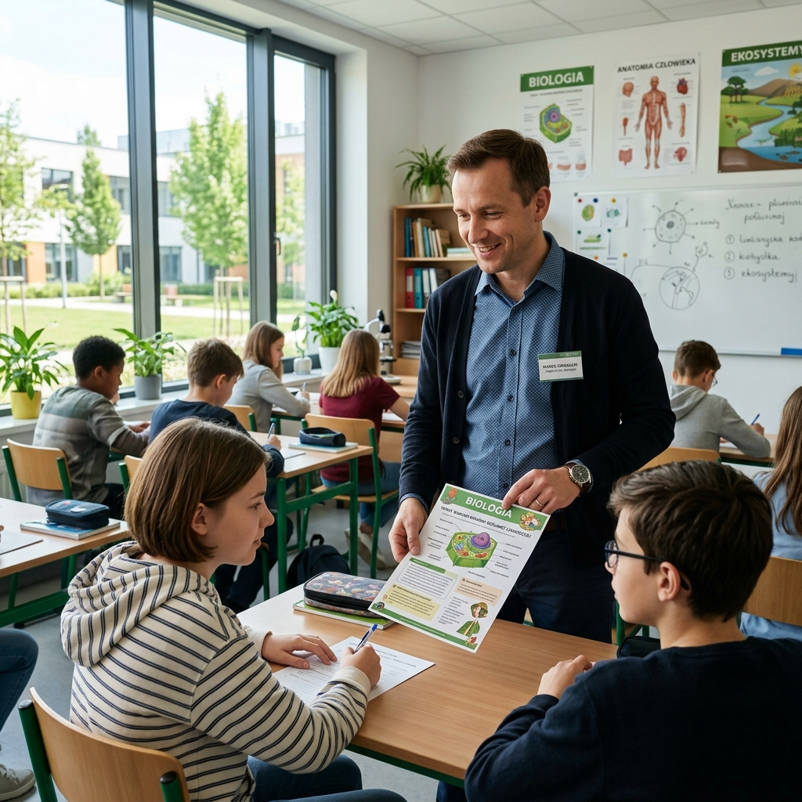

Odzyskaj 6 godzin
tygodniowo
Belfer AI przygotowuje komplet materiałów do lekcji w 10 minut zamiast 2,5 godziny. Scenariusz, karty pracy i sprawdzian powiązane z polską podstawą programową — Ty tylko sprawdzasz i drukujesz.
Tak wygląda Twój panel po zalogowaniu
Poniżej rzeczywisty widok pulpitu nauczyciela: gotowe materiały, licznik zaoszczędzonego czasu i postęp realizacji podstawy programowej w jednym miejscu.
- Panel7
- Nowa lekcja
- Moje materiały24
- Karty pracy
- Sprawdziany
- Zadania domowe
- Moduł SPE / IPET3
- Biblioteka szkoły132
- Ustawienia
Dzień dobry, Anno
Biologia · klasy 7–8 · Zespół Szkół nr 3
Ostatnie materiały zobacz wszystkie
Realizacja podstawy programowej
Biologia · klasa 7
68% wymagań objętych materiałami
Następna lekcja
Makieta interfejsu w fazie rozwoju produktu · dane przykładowe
Tracisz weekendy na materiały, które uczniowie robią w minutę
Sztuczna inteligencja weszła do polskich szkół od strony uczniów, nie nauczycieli. Kadra pedagogiczna nie ma narzędzia stworzonego pod jej realny warsztat pracy.
Badanie NASK wśród nauczycieli klas 4–8 pokazało, że trzy czwarte z nich nie korzystało z generatywnej AI w pracy, a jedynie 6% robiło to wielokrotnie.
Badanie NASK 2025Ponad połowa polskich uczniów i studentów używała generatywnej AI w trakcie edukacji, najczęściej do wyszukiwania informacji i pisania tekstów.
Raport EdukacyjnyW roku szkolnym 2025/26 w Systemie Informacji Oświatowej zarejestrowanych było ponad 732 tysiące nauczycieli potrzebujących dedykowanych narzędzi.
Dane SIO 2025/26Ogólne chatboty nie znają numeracji wymagań podstawy programowej, formatów arkuszy egzaminacyjnych CKE ani dokumentacji szkolnej.
Nauczyciel dostaje surowy tekst, który musi sam zweryfikować, przeredagować i sformatować — przez co oszczędność czasu w dużej mierze znika.
Prawdziwy koszt przygotowań to Twoje niedziele
Nauczyciel spędza średnio od 8 do 14 godzin tygodniowo na wyszukiwaniu ćwiczeń, formatowaniu tabel w Wordzie i dostosowywaniu zadań dla uczniów ze specjalnymi potrzebami. Belfer AI skraca ten proces o 80%.
Nauczyciele odzyskali średnio 6 godzin tygodniowo
Belfer AI jest w fazie budowy produktu. Poniższe liczby i wypowiedzi przedstawiają scenariusz docelowy przygotowany na podstawie testów pilotażowych.
Jedna lekcja: przed i po
Przygotowanie tematu „Budowa i funkcje układu krwionośnego” dla klasy 7, wraz z materiałami dla uczniów z dysleksją.
Tradycyjne przygotowanie lekcji
- Przeglądanie podstawy programowej i podręcznika w poszukiwaniu wymagań
- Pisanie scenariusza od zera w pojedynczym pliku Worda
- Ręczne tworzenie karty pracy i drugiej wersji uproszczonej
- Osobne przygotowanie testu i klucza odpowiedzi
- Formatowanie i zmagania z akapitami przy druku
Przepływ automatyczny z Belfer AI
- Wybór przedmiotu, klasy i tematu — wymagania podpowiadane automatycznie
- Ustawienie czasu lekcji, metod i liczby uczniów ze specjalnymi potrzebami
- Wygenerowanie spójnego pakietu materiałów jednym poleceniem
- Szybka redakcja i akceptacja treści przez nauczyciela
- Eksport do Worda i PDF gotowy do druku
Dane pochodzą z pilotażu i będą aktualizowane wraz z rozszerzaniem grupy testowej. Cytaty publikowane za zgodą uczestników.
Chcesz takich wyników w swojej klasie?
Pilotaż jest bezpłatny, a zgłoszenie zajmuje minutę.
Osiem rzeczy, których nie musisz już robić ręcznie
Belfer AI nie jest kolejnym czatem. Każdy moduł zdejmuje z Ciebie konkretną czynność, na którą dziś tracisz wieczory.
Przygotuj lekcję w 10 minut, nie w dwie godziny
Dostajesz pełny konspekt: cele w języku ucznia, przebieg rozpisany na minuty, metody aktywizujące, kryteria sukcesu i przypisane punkty podstawy programowej.
Przestań pisać trzy wersje tego samego zadania
Z jednego polecenia otrzymujesz karty pracy w trzech poziomach: podstawowym, rozszerzonym i uproszczonym dla uczniów wymagających wsparcia.
Sprawdzian z kluczem gotowy przed przerwą
Testy z kluczem odpowiedzi, punktacją i kryteriami oceniania, w układzie wzorowanym na arkuszach egzaminacyjnych CKE.
Zadbaj o uczniów z orzeczeniami bez nocnej pracy
Automatyczna adaptacja treści SPE: uproszczony język, skrócone polecenia i wsparcie przy dokumentacji indywidualnych programów IPET.
Zadaj pracę domową dopasowaną do czasu ucznia
Zestawy różnicowane objętością i typem zadania, z ustawianym szacowanym czasem pracy dostosowanym do realiów uczniów.
Napisz informację zwrotną w minutę, nie w kwadrans
Propozycje komentarza w duchu oceniania kształtującego. Ocenę końcową i wpis zawsze wystawiasz Ty jako nauczyciel.
Nie zaczynaj od zera co roku
Wspólne repozytorium rady pedagogicznej: Twój dorobek i materiały kolegów zostają w szkole i wracają w kolejnym roku.
Drukuj od razu, bez poprawiania formatowania
Gotowe pliki Word (DOCX) i PDF w ułożonym układzie do druku, bez przeklejania z okna czatu i walki z akapitami.
Cztery kroki od tematu do wydruku
Wybór kontekstu
Nauczyciel wskazuje przedmiot, etap edukacyjny, klasę i temat. System sam podpowiada powiązane wymagania szczegółowe podstawy programowej i pozwala je zawężyć.
Ustawienie parametrów
Czas lekcji, liczebność i poziom klasy, preferowane metody pracy, dostępne wyposażenie sali, obecność uczniów ze specjalnymi potrzebami (SPE/IPET).
Generowanie zestawu
Belfer AI tworzy spójny pakiet: scenariusz, kartę pracy w 3 poziomach, zadanie domowe i test sprawdzający z kluczem odpowiedzi — wszystkie elementy odnoszą się do tych samych celów.
Edycja, zapis, ponowne użycie
Materiał można doprecyzować w edytorze, wyeksportować do Worda lub PDF i zapisać w bibliotece szkoły jako szablon na kolejny rok.
Kluczowa zasada projektowa: nauczyciel jest autorem i redaktorem, a Belfer AI wykonawcą czynności powtarzalnych. Żaden materiał nie trafia do uczniów bez akceptacji człowieka.
Lekcja, na której wszyscy pracują na tych samych celach
Dzięki 3 poziomom trudności kart pracy uczniowie ze specjalnymi potrzebami (SPE) realizują ten sam temat bez poczucia wykluczenia, a Ty nie musisz pisać osobnych wersji po nocach.

Tak wygląda praca w Belfrze AI
Trzy ekrany pokrywające cały przepływ: zdefiniowanie lekcji, gotowy materiał z odwołaniem do podstawy programowej i wspólna biblioteka placówki.
Ekran 1 – nauczyciel wypełnia pola, które zna z codziennej pracy, bez pisania promptów.
12 min – praca z modelem 3D serca
15 min – karta pracy, dwa poziomy trudności
8 min – mapa myśli na tablicy
5 min – podsumowanie i kryteria sukcesu
Ekran 2 – gotowy materiał z widocznym źródłem treści i zakładkami pozostałych elementów pakietu.
Ekran 3 – dorobek całej rady pedagogicznej w jednym miejscu, z obiegiem zatwierdzania materiałów.
Zobacz pełny przykładowy scenariusz
Kompletny pakiet dla klasy 7. Bez rejestracji i bez podawania danych.
Ekrany przedstawiają aktualny stan prac nad interfejsem i mogą różnić się od wersji produkcyjnej.
Jedno polecenie, komplet materiałów
Poniżej uproszczony zapis tego, co dzieje się po stronie nauczyciela i po stronie systemu.
Klasa: 7 szkoły podstawowej
Temat: Budowa i funkcje układu krwionośnego
Czas: 45 minut
Uczniowie SPE: 2 (dysleksja)
Metody: praca w parach, model 3D
> Generuję zestaw...
Co otrzymuje nauczyciel
- Scenariusz 45-minutowy z rozpisanym przebiegiem i kryteriami sukcesu
- Odwołanie do konkretnych wymagań podstawy programowej dla klasy 7
- Kartę pracy w wersji podstawowej i uproszczonej dla uczniów z dysleksją
- Pięć pytań sprawdzających z kluczem i punktacją
- Zadanie domowe w dwóch wariantach trudności
- Plik Word gotowy do druku oraz PDF do wysłania na dziennik elektroniczny
Zobacz pełny efekt tego polecenia
Kompletny pakiet: scenariusz z minutowym przebiegiem, karta pracy w trzech poziomach, sprawdzian z kluczem punktacji i adaptacja SPE z gotowym zapisem do IPET.
Materiały, których nie musisz sprawdzać od zera
Przy każdej treści widzisz, z jakiego wymagania podstawy programowej wynika. Weryfikacja zajmuje minuty, nie godziny.
Wiesz, skąd wzięła się każda treść
Wymagania rozbite na pojedyncze, indeksowane rekordy z przypisaniem do przedmiotu, etapu i klasy. Każdy wygenerowany materiał ma wskazane źródło.
Mniej zmyślonych faktów w materiale
Architektura RAG: model językowy pracuje na dokumentach z weryfikowanej bazy wiedzy, co ogranicza konfabulacje i pozwala pokazać podstawę treści.
Zawsze poprawna struktura metodyczna
Wyjście jest wtłaczane w sprawdzone struktury metodyczne, dlatego scenariusz ma zawsze cele, minutowy przebieg, podsumowanie i kryteria oceniania.
Narzędzie uczy się na Twoich poprawkach
Poprawki nauczycieli i oceny materiałów zasilają ranking szablonów — produkt uczy się na realnym warsztacie polskiej szkoły.
Co zyskujesz na swoim stanowisku
Belfer AI dostarcza konkretną wartość dla każdego poziomu struktury oświatowej.
Ponad 700 tys. nauczycieli
Odzyskaj 6 godzin tygodniowo traconych dotąd na przygotowania, formowanie sprawdzianów i walkę z akapitami w Wordzie.
Uczniowie z orzeczeniami
Szybka adaptacja materiałów lekcyjnych (3 poziomy kart) oraz gotowe wpisy wspomagające dokumentację programów IPET.
Ponad 20 tys. placówek
Spójna jakość materiałów w całej szkole. Dorobek dydaktyczny zostaje w placówce w postaci wspólnej biblioteki.
Organizacja wdrożeń JST
Skalowalne, bezpieczne RODO podnoszenie kompetencji cyfrowych kadry pedagogicznej w podległych placówkach.
Wspólna biblioteka rady pedagogicznej
Kiedy jeden nauczyciel dopracuje sprawdzian lub scenariusz z biologii czy matematyki, natychmiast staje się on zasobem całej placówki. Dorobek dydaktyczny zostaje w szkole na lata.
Dlaczego zwykły chatbot nie oszczędza Ci czasu
Porównanie pracy z ogólnym asystentem AI vs dedykowanym systemem Belfer AI.
| Kryterium | Ogólny asystent AI (np. ChatGPT) | Belfer AI |
|---|---|---|
| Znajomość podstawy programowej | Wiedza ogólna, brak numeracji wymagań MEN | ✓ 100% MENIndeksowana baza wymagań z odwołaniem w materiale |
| Format wyniku | Surowy tekst w oknie czatu | ✓ DOCX & PDFDokument Word i PDF w ułożonym układzie do druku |
| Spójność pakietu materiałów | Osobne, niepowiązane ze sobą odpowiedzi | ✓ PAKIET 360°Scenariusz, karta pracy i test wokół tych samych celów |
| Uczniowie SPE / IPET | Ogólne wskazówki dopiero po pisaniu długich promptów | ✓ SPE SYSTEMDedykowany moduł adaptacji i dokumentacji IPET |
| Praca zespołowa | Konto indywidualne nauczyciela | ✓ BAZA SZKOŁYBiblioteka placówki z panelem dyrektora i obiegiem pracy |
| Zaufanie i RODO | Brak wskazania źródeł, ryzyko halucynacji | ✓ RODO 100%Wskazanie źródeł i pełna zgodność prawna RODO |
Zachowujesz pełną kontrolę nad treścią w klasie
Skoro największe obawy kadry dotyczą uzależnienia uczniów, spłycania wiedzy i bezpieczeństwa danych, produkt odpowiada na nie wprost.
Nic nie wychodzi bez Twojej zgody
Belfer AI nie ocenia uczniów i nie prowadzi zajęć za nauczyciela. Przygotowuje propozycje materiałów, które weryfikuje i zatwierdza człowiek.
Nie powierzasz nam danych uczniów
System pracuje na treściach dydaktycznych i ogólnych parametrach klasy, nie na imiennych danych wrażliwych czy PESEL-ach.
Uczniowie nie odrobią tu zadania
Produkt celowo jest otwarty wyłącznie dla kadry pedagogicznej. Zadania są projektowane tak, by wymagały samodzielnego myślenia uczniów.
Obrona materiału przed kontrolą
Każdy plik wyraźnie wskazuje, z jakich wymagań MEN i szablonów powstał, co umożliwia bezproblemową weryfikację nadzoru pedagogicznego.
Policz, ile czasu odzyskasz co miesiąc
Przesuń suwaki i sprawdź, ile godzin miesięcznie wraca do Ciebie oraz jaka jest wartość tego czasu. Wyliczenie zakłada skrócenie przygotowania materiałów o 80%.
32
godzin odzyskanych miesięcznie
Wyliczenie szacunkowe na podstawie wyników pilotażu. Realna oszczędność zależy od przedmiotu i sposobu pracy.
Zacznij bezpłatnie, płać dopiero gdy oszczędzasz czas
Model freemium z progiem wejścia zero dla pojedynczego nauczyciela i malejącą stawką jednostkową przy licencjach dla całej rady pedagogicznej.
Darmowy
0 zł
bez limitu czasowego
- 10 generowań miesięcznie
- Scenariusze lekcji i karty pracy
- Eksport do PDF
- Historia 30 dni
- Materiały ze znakiem wodnym
Nauczyciel
29 zł / mies.
lub 290 zł rocznie (2 miesiące gratis)
- Bez limitu generowań
- Wszystkie moduły, w tym sprawdziany i SPE/IPET
- Eksport do Worda i PDF bez znaku wodnego
- Biblioteka prywatna i szablony własne
- Asystent informacji zwrotnej
- Wsparcie e-mail w 24 h
Szkoła
od 149 zł
rocznie za nauczyciela, min. 10 stanowisk
- Wszystko z planu Nauczyciel
- Wspólna biblioteka placówki
- Panel dyrektora i statystyki użycia
- Szablony i standardy szkolne
- Szkolenie wdrożeniowe dla rady pedagogicznej
- Faktura z odroczonym terminem (JST)
Samorząd / Enterprise
wycena
100+ stanowisk, sieci szkół, JST, ODN
- Stawka jednostkowa malejąca ze skalą
- Integracje z dziennikiem elektronicznym
- Dedykowana baza materiałów regionalnych
- Cykl szkoleń i opiekun wdrożenia
- Umowa powierzenia danych i SLA
Najczęściej zadawane pytania przed zakupem
Czy cena wzrośnie, jeśli będziemy generować dużo materiałów?
OdpowiedźNie. W planach Nauczyciel, Szkoła i Enterprise nie ma limitów generowań ani rozliczania za zużycie. Płacisz stałą kwotę za stanowisko, niezależnie od intensywności pracy.
Czy wdrożenie i szkolenie są dodatkowo płatne?
OdpowiedźW planie Szkoła jedna sesja szkoleniowa dla rady pedagogicznej jest w cenie licencji. W planie Enterprise zapewniamy cykl szkoleń i opiekuna wdrożenia bez dodatkowej opłaty.
Czy szkoła musi kupować konta dla uczniów?
OdpowiedźNie. Belfer AI jest narzędziem kadry pedagogicznej, więc rozliczasz wyłącznie stanowiska nauczycielskie. To główna różnica w koszcie wobec platform sprzedających konta uczniowskie.
Co się stanie z naszymi materiałami po rezygnacji?
OdpowiedźPrzez 60 dni od zakończenia subskrypcji zachowujesz możliwość eksportu całej biblioteki do plików Word i PDF. Materiały pozostają dorobkiem placówki.
Czy możemy zapłacić z faktury po terminie i z procedury zamówień?
OdpowiedźTak. Dla jednostek budżetowych wystawiamy fakturę z odroczonym terminem płatności (14/30 dni) i dostarczamy dokumenty potrzebne do procedury zakupowej.
Dokumenty, których zażąda Twoja szkoła
Placówka publiczna nie kupuje narzędzia, którego nie może obronić przed inspekcją. Belfer AI jest projektowany od strony wymogów formalnych, nie dopisywany do nich później.
Umowa powierzenia w standardzie
Gotowa umowa powierzenia przetwarzania danych zgodna z art. 28 RODO, do podpisania przed wdrożeniem. Określa przedmiot, czas i charakter przetwarzania, obowiązki poufności oraz zasady usunięcia danych po zakończeniu usługi.
Dane w Unii Europejskiej
Infrastruktura i kopie zapasowe w centrach danych na terenie UE. Brak transferu danych do państw trzecich bez podstawy prawnej i poinformowania placówki.
Gotowość na wymogi od sierpnia 2026
Systemy AI stosowane w edukacji należą do kategorii wysokiego ryzyka, a pełne obowiązki dla nich obowiązują od 2 sierpnia 2026 roku. Prowadzimy dokumentację techniczną, ocenę ryzyka, mechanizmy nadzoru człowieka i przejrzyste informowanie o interakcji z AI.
Bez danych wrażliwych uczniów
Do generowania materiałów wystarczą parametry klasy, nie imienne dane. Nie przetwarzamy orzeczeń, ocen ani danych identyfikacyjnych uczniów.
Rozliczalność i historia zmian
Panel dyrektora pokazuje, kto wygenerował i zatwierdził materiał. Historia wersji umożliwia wykazanie nadzoru merytorycznego nad treściami.
Umowa serwisowa dla placówek
W licencjach szkolnych i samorządowych określona dostępność usługi, czasy reakcji wsparcia i procedura zgłaszania incydentów bezpieczeństwa.
Co dostajesz w pakiecie dokumentów wdrożeniowych
- Umowa powierzenia przetwarzania danych osobowych zgodna z art. 28 RODO
- Karta informacyjna systemu AI: przeznaczenie, ograniczenia, zasady nadzoru człowieka
- Polityka retencji i usuwania danych oraz procedura eksportu materiałów
- Rejestr podpodmiotów przetwarzających wraz z lokalizacją przetwarzania
- Materiał informacyjny dla rady pedagogicznej i rodziców o zasadach użycia AI w szkole
- Rekomendacje szkoleniowe wspierające obowiązek kompetencji AI po stronie placówki
Gwarancja spokoju dyrekcji przed nadzorem pedagogicznym
Każdy plik wygenerowany w Belfrze AI wyraźnie wskazuje źródła i powiązane punkty podstawy MEN 2026. Dokumentację wdrożeniową z umową RODO otrzymujesz przed rozpoczęciem pracy.
Roadmapa wdrożenia i rozwoju
Jasno wytyczona ścieżka rozwoju narzędzia tworzonego we współpracy z polską kadrą pedagogiczną.
- Etap 1 – prototyp ✓ ZAKOŃCZONYDziałający generator scenariuszy i kart pracy dla wybranych przedmiotów, testy z grupą nauczycieli pilotażowych.
- Etap 2 – pełne MVP ✓ ZAKOŃCZONYModuł sprawdzianów, eksport do Worda i PDF, konta indywidualne, pierwsza wersja biblioteki materiałów.
- Etap 3 – pilotaże szkolne ● W TRAKCIE REALIZACJIWdrożenia w szkołach partnerskich, panel dyrektora, licencje placówkowe, moduł SPE i IPET.
- Etap 4 – skalowanie Q4 2026Pokrycie wszystkich przedmiotów, integracje z dziennikami elektronicznymi, współpraca z samorządami i ośrodkami doskonalenia nauczycieli.
Najczęściej zadawane pytania (FAQ)
Czy Belfer AI zastąpi nauczyciela?
Nie. Przejmuje czynności powtarzalne — formatowanie, wersjonowanie zadań, przygotowanie dokumentów. Decyzje dydaktyczne, ocena końcowa i relacja z uczniem pozostają w 100% po stronie nauczyciela.
Skąd pewność, że materiały są zgodne z programem?
Generowanie opiera się na ustrukturyzowanej bazie wymagań podstawy programowej MEN, a każdy wygenerowany materiał ma podany odnośnik do szczegółowego punktu programu.
Czy trzeba znać się na promptach?
Nie. Nauczyciel wypełnia standardowe formularze z pól, które zna z codziennej pracy: przedmiot, klasa, temat, czas lekcji oraz metody pracy.
Czy szkoła traci dostęp do materiałów po odejściu nauczyciela?
Nie, jeśli korzysta z licencji placówkowej — dorobek dydaktyczny zostaje zapisany w bezpiecznej bibliotece szkoły.
Czy uczniowie mogą używać Belfra AI do odrabiania zadań?
Produkt jest projektowany wyłącznie jako narzędzie kadry pedagogicznej, z autoryzacją dostępu po stronie nauczyciela.
Odzyskaj swoje wieczory i weekendy
Dołącz do bezpłatnego programu pilotażowego: zyskaj pełny dostęp do systemu, wpływ na rozwój funkcji i gwarancję utrzymania ceny startowej na pierwszy rok.
Odzyskaj 6 godzin w każdy weekend
Zamień niedzielne wieczory przy edytorze tekstu na czas dla rodziny i własnych pasji. Przetestuj Belfer AI bezpłatnie i bez karty kredytowej.